长上下文能力，正在成为基础模型的新分水岭
过去一年，DeepSeek 在开源基础模型领域持续推进架构创新：V2 通过 MLA 架构提升注意力效率，V3 以 MoE 路线验证稀疏激活的大规模能力，R1 则进一步强化推理表现。现在 V4 预览版的核心卖点非常明确：百万 Token 超长上下文，而且是原生架构级支持。
这意味着许多过去依赖复杂 RAG 管线、分段摘要和多轮拼接的任务，可以转向更直接的处理方式：让模型在更完整的上下文中完成理解、检索、推理和生成。
记住三个数字：1.6T 参数、1M Token、Codeforces #23。
对开发者来说，这不是“窗口大一点”这么简单。它改变的是工作方式：大型代码审查、跨文档研究、长周期 Agent 任务，都开始有了更像“整块处理”的可能性。
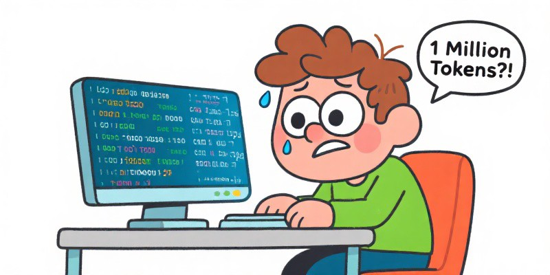
双版本策略：旗舰性能与高效部署并行
DeepSeek V4 这次分为 V4-Pro 和 V4-Flash。前者负责冲顶，后者负责把能力变得更便宜、更容易落地。重点是：两个版本都支持 1M Token 上下文。
| 维度 | V4-Pro | V4-Flash |
|---|---|---|
| 总参数 | 1.6T | 284B |
| 激活参数 | 49B | 13B |
| 上下文长度 | 1M Token | 1M Token |
| 训练数据 | 33T Tokens | 32T Tokens |
| Transformer 层数 | 61 | 43 |
| 路由专家数 | 384 | 256 |
| 定位 | 旗舰性能，对标顶级闭源 | 轻量高效，适合先用起来 |
面向复杂推理、Agent 编排和高难度代码任务，V4-Pro 提供更完整的能力上限；面向线上产品、成本敏感型调用和低延迟场景，V4-Flash 则更强调推理效率与部署可行性。
五项关键设计，支撑百万 Token 可用性
CSA + HCA：在压缩空间中保留关键信息
传统注意力机制在超长上下文下容易面临计算量快速增长的问题。V4 的思路是先压缩 KV 缓存，再在压缩后的表示空间中选择重点区域处理，相当于先建立目录和索引，再定位关键内容。
MoE 专家路由：按需激活，控制计算成本
MoE 的关键优势在于，不是每个 Token 都调用全部参数，而是按需激活一小部分专家模块。可以将其理解为一种高效分流机制：不同输入进入不同处理路径，从而兼顾模型容量与推理成本。
mHC 超连接：增强深层网络中的信号稳定性
在 61 层网络中，信息跨层传播容易出现衰减或失真。mHC 的目标是增强层间信号稳定性，降低深层网络训练后期的损失震荡风险。
Muon 优化器：改善大规模训练的收敛稳定性
Muon 通过矩阵正交化约束参数更新方向，帮助模型更稳定地收敛。相较传统优化器，它更强调更新方向的结构性约束，从而降低训练过程中的震荡。
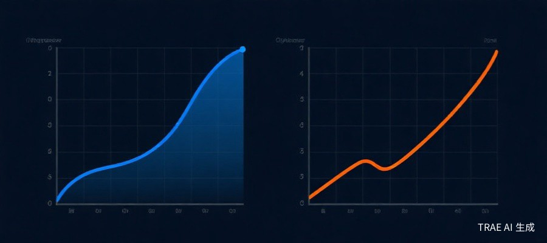
FP4 量化：以更低精度缓解存储与计算压力
1.6T 参数如果都按高精度存储，显存压力会非常夸张。V4 使用 FP4 来压缩专家权重，在尽量保持质量的同时显著降低存储和计算负担。
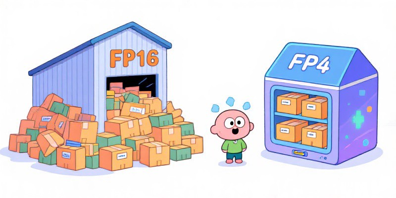
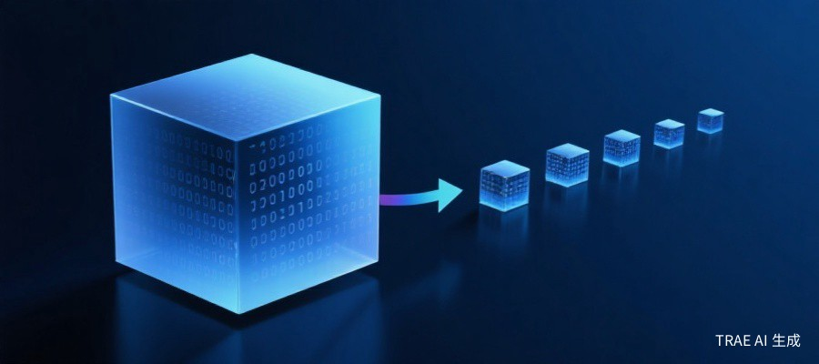
国产算力全栈训练：从芯片适配到系统优化
V4 的另一个看点，是围绕国产算力完成训练和适配。它不只是模型能力展示，也是在证明一条更自主的技术路线可以跑通。
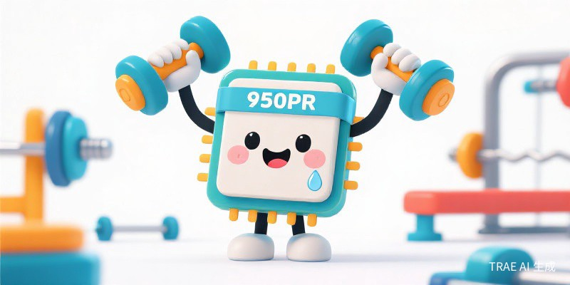
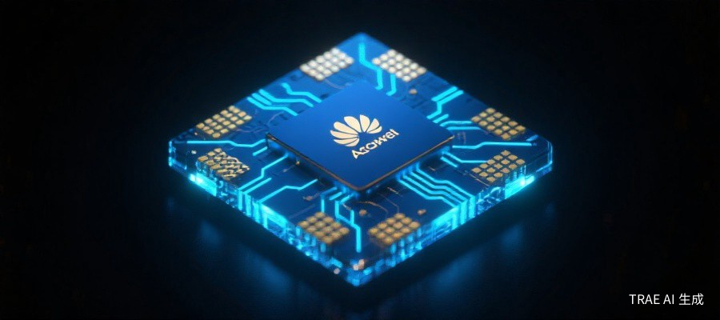
效率提升：让百万 Token 从能力展示走向实际可用
长上下文能力如果伴随不可接受的推理成本，就很难进入真实业务。V4 的关键价值在于，在 1M Token 场景下同时降低计算量与 KV Cache 占用。
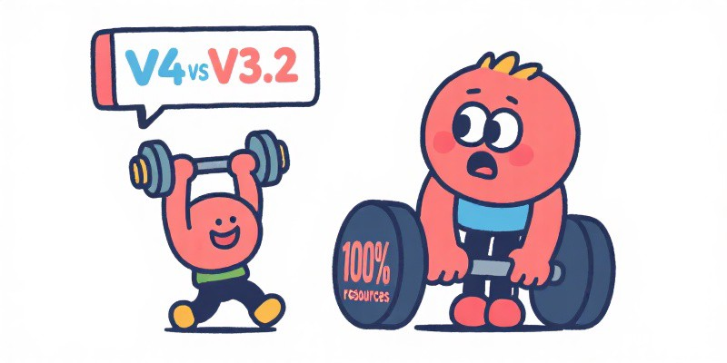
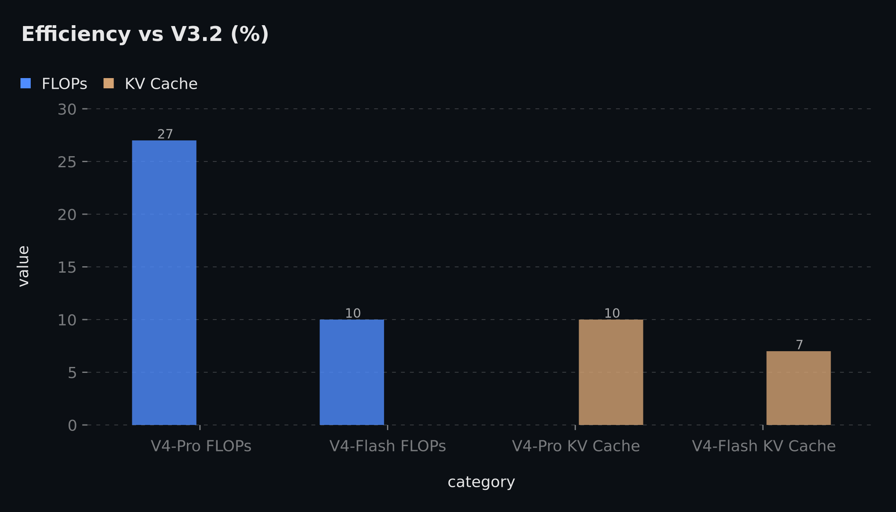
综合评测：知识、推理、Agent 与长上下文同步提升
从公开评测维度看，V4 在知识问答、复杂推理、软件工程 Agent 和长上下文理解方面都展示出较强竞争力。尤其在推理与代码相关任务中，它已进入顶级模型的竞争区间。
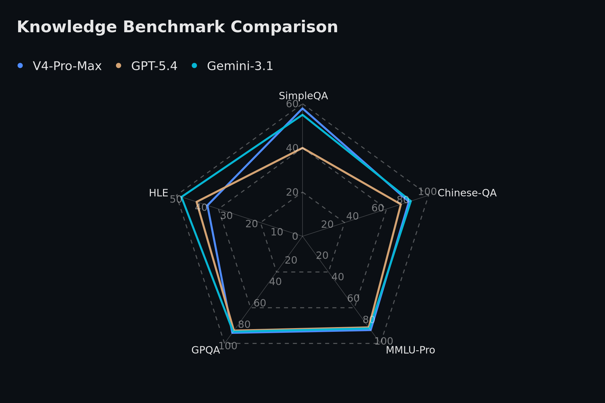
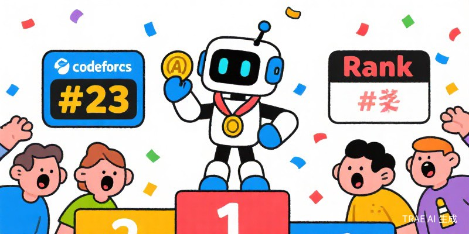
Agent 能力也值得关注：SWE-Verified、Terminal Bench、BrowseComp 等任务衡量的是模型能不能更像一个能动手的开发搭档，而不只是会聊天。
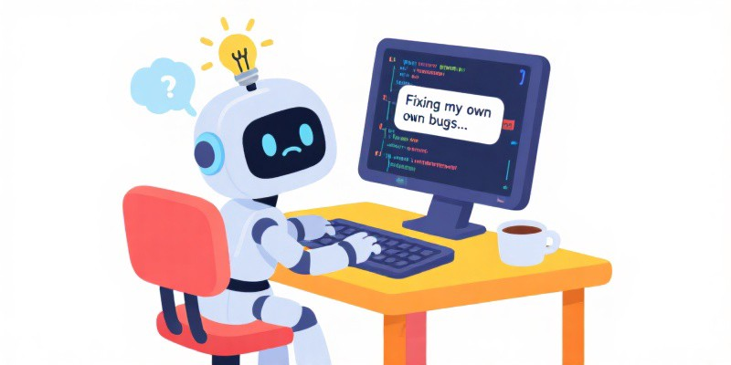
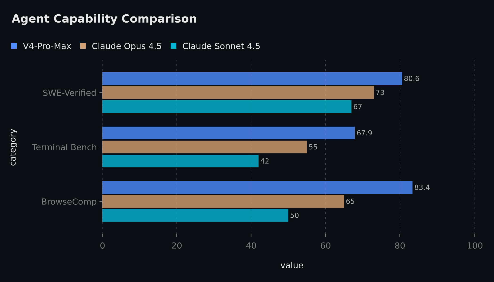
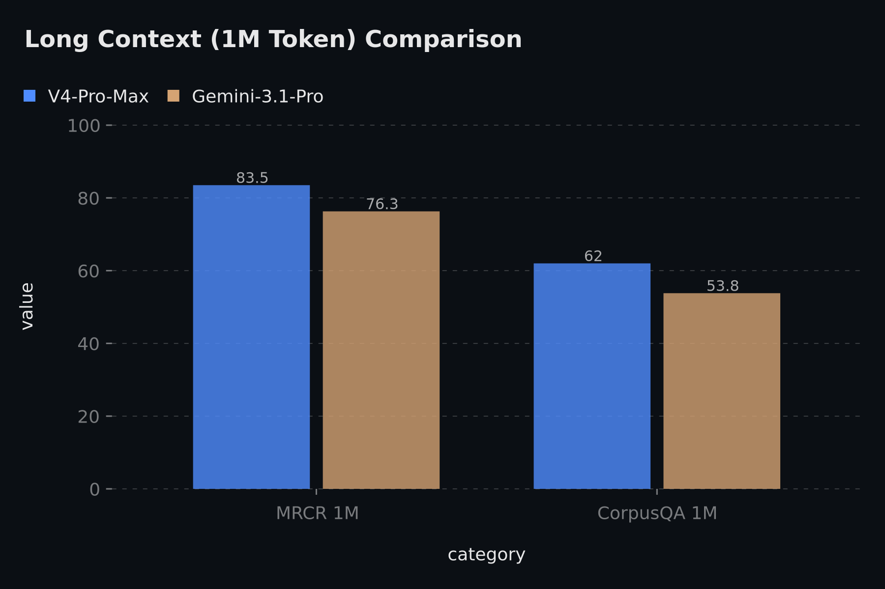
后训练流程：领域专家能力的统一蒸馏
如果说预训练负责构建通用知识基础，后训练则决定模型在具体任务上的可用性。V4 的思路是先在数学、编程、Agent、指令遵循等领域训练专家模型，再通过蒸馏和统一优化，将多种能力整合到同一个模型中。
三种模式：Non-Think 快速回答，Think 深度分析，Think Max 极限推理。
这种设计让模型可以根据任务复杂度调整推理深度：常规问答保持响应效率，复杂推理则投入更充分的计算预算。对应用方而言，这有助于在质量、延迟和成本之间建立更灵活的平衡。
开源价值：推动长上下文能力进入社区生态
模型权重、推理代码、技术细节、架构实现都开放出来，这对社区的意义很大。它把百万 Token 长上下文从少数闭源产品的专属能力，推向更多开发者能研究、复现、改造的方向。
更重要的是，开源让研究者和开发者可以在同一技术基础上验证、复现和改进方案。对于长上下文模型的发展来说，这种透明度本身就是生态建设的一部分。